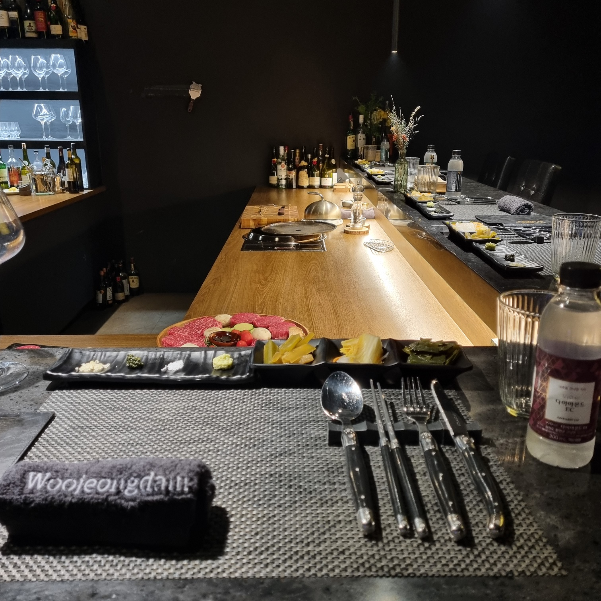

[기본 테이블 세팅]
첫인상이 좋았다.
테이블 매트와 식기 받침, 물수건까지도 대리석 식탁과 어울리는 색상이었기 때문이다. 디테일에 신경을 썼구나 했다. 고급스러워 보이는 생수도 굿. 참고로 찾아봤더니 코카콜라 제품이었다.
여기까지는 아주 만족스러웠지만.
첫인상이 좋았다.
테이블 매트와 식기 받침, 물수건까지도 대리석 식탁과 어울리는 색상이었기 때문이다. 디테일에 신경을 썼구나 했다. 고급스러워 보이는 생수도 굿. 참고로 찾아봤더니 코카콜라 제품이었다.
여기까지는 아주 만족스러웠지만.